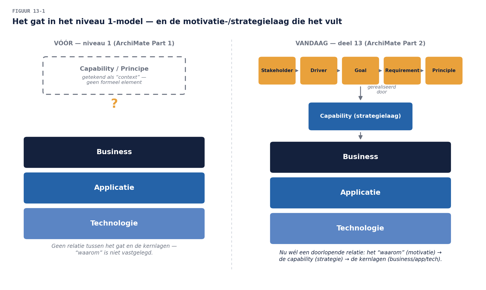

Business & Enterprise Architectuur — Niveau 2
Deel 13 · Reader — ArchiMate gevorderd I: motivatie- en strategielaag
Positionering. Dit deel bouwt op ArchiMate Part 1 (niveau 1, deel 8) en bereidt voor op ArchiMate® 3 Part 2. Vandaag krijgen twee begrippen die u al kent — capability (deel 4, 12) en principe (deel 9) — eindelijk hun formele modelelement, en sluiten we de cirkel tussen “waarom” en “wat”.
Leerdoelen
Na dit deel kun je:
- de motivatielaag toepassen: stakeholder, driver, assessment, goal, outcome, principle, requirement, constraint, meaning, value;
- de strategielaag toepassen: resource, capability, course of action, value stream — en capability eindelijk correct modelleren, niet meer als “context” zoals in niveau 1, deel 8;
- de implementatie- en migratielaag op hoofdlijnen toepassen: work package, deliverable, plateau, gap;
- een volledige traceerbaarheidsketen bouwen: van goal via requirement en capability naar business process en application service;
- uitleggen waarom deze drie lagen niet “extra” zijn maar het samenhangbewijs leveren dat de kernlagen (niveau 1) alleen konden beweren.
1. Casus: “waarom staat dit nergens?”
Bij het opbouwen van het programmamodel voor het Mutatieplatform (deel 8, niveau 1, toegepast op programmaschaal) loopt u tegen een grens aan. U wilt vastleggen: waarom bestaat de generieke mutatieverwerkingscapability (het antwoord: het principe “vermogens vóór systemen”, niveau 1 deel 9, en de strategische doelstelling “kostenreductie uitvoering”, deel 12). Maar in het model van niveau 1, deel 8, was daar geen plek voor — capabilities stonden er als “context”, principes helemaal niet.
Dat is geen omissie van niveau 1; het was een bewuste afbakening (Part 1 versus Part 2). Vandaag vult u het gat: de motivatielaag legt het waarom vast, de strategielaag legt capability en waardestroom formeel vast, en samen maken zij zichtbaar of een architectuurkeuze werkelijk voortkomt uit een doel — of dat hij, zoals bij WGP 2.0, uit het niets kwam.

2. De motivatielaag: van stakeholder naar requirement
2.1 De elementen en hun keten
De motivatielaag herformuleert wat u in niveau 1, deel 3 en deel 9 al inhoudelijk deed, nu als een keten van gemodelleerde elementen:
| Element | Betekenis | Voorbeeld Mutatieplatform |
|---|---|---|
| Stakeholder | wie belang heeft | Manager Begunstigden |
| Driver | de kracht die verandering motiveert | “Toenemend fraude-risico bij begunstigdenwijzigingen” |
| Assessment | een beoordeling van de huidige situatie t.o.v. een driver | “Autorisatie is nu ad hoc en persoonsafhankelijk” |
| Goal | het te bereiken resultaat | “Elke begunstigdenwijziging aantoonbaar bevoegd geautoriseerd” |
| Outcome | het meetbare, gerealiseerde effect | “Nul ongeautoriseerde wijzigingen in twaalf maanden” |
| Principle | de blijvende richtlijn (niveau 1, deel 9, nu met element) | “Afwijken mag, verdwijnen niet” |
| Requirement | een concrete, toetsbare eis die uit een goal volgt | “Elke begunstigdenwijziging vereist twee-ogen-autorisatie” |
| Constraint | een niet-onderhandelbare beperking | “Geen nieuwe autorisatiesystemen naast IAM-Suite” |
| Meaning | de betekenis van een element voor een stakeholder | “‘Bevoegd’ betekent voor Compliance iets anders dan voor de servicedesk” |
| Value | de waargenomen waarde voor een stakeholder | “Vertrouwen van het bestuur in de mutatieketen” |
De keten leest van boven naar beneden: een stakeholder ervaart een driver, die via een assessment van de huidige situatie leidt tot een goal, geoperationaliseerd in requirements (binnen constraints), getoetst aan principles, met een gerealiseerd outcome die value oplevert.
2.2 Relaties: influence, realization
Twee relaties dragen de motivatielaag, aanvullend op de zeven kernrelaties (niveau 1, deel 8, §5):
- Influence: het ene motivatie-element beïnvloedt het andere, met een optioneel + of − teken (een driver kan een goal positief beïnvloeden, of een constraint kan een requirement juist inperken). Influence is bewust zwakker dan realization — het beweert geen determinisme, alleen invloed.
- Realization (u kent hem al): een requirement wordt gerealiseerd door een element uit een kernlaag — bijvoorbeeld een business process dat een requirement waarmaakt.
Examensignaal. Part 2 toetst vooral of u de juiste relatie kiest tussen motivatie-elementen onderling (meestal influence) versus tussen motivatie en kernlaag (meestal realization). Een requirement dat een business process “beïnvloedt” in plaats van “gerealiseerd wordt door” is een veelgemaakte fout — het requirement is het “wat moet”, het proces is het “hoe het waargemaakt wordt”: realization, niet influence.
2.3 Meaning en value: de subjectieve elementen
Meaning en value zijn de twee elementen die ArchiMate bewust stakeholder-afhankelijk maakt — hetzelfde model-element kan voor twee stakeholders een andere meaning hebben. Dit is de formele erkenning van wat niveau 1 (deel 4-5) al ontdekte bij “werkgever”: betekenis is niet universeel. Voor het Mutatieplatform: het begrip “bevoegd” heeft voor Compliance de meaning “getoetst aan de vastgestelde autorisatiematrix”, voor de servicedesk de meaning “de aanvrager kon zich identificeren” — twee verschillende, allebei legitieme readings van hetzelfde woord, nu elk als eigen meaning-element met een eigen relatie naar de stakeholder die hem hanteert.
3. De strategielaag: capability, resource, course of action, value stream
3.1 Capability, eindelijk geformaliseerd
Niveau 1 (deel 8, §4) markeerde capability als “motivatie-laag-element, hier als context getekend, uitgewerkt in deel 13-14” — dat moment is nu. Een capability in de strategielaag is een element met eigen relaties: het wordt gerealiseerd door kernlaag-elementen (een business process, een application component die de capability “Identiteit en bevoegdheid vaststellen” mede waarmaakt), het gebruikt resources, en het draagt bij aan (influence) goals uit de motivatielaag.
3.2 Resource
Een resource is een actief dat een organisatie bezit of controleert en dat nodig is voor een capability — mensen, kennis, geld, of informatie (let op: géén applicatie of technologie-element; die staan al in hun eigen lagen). Voor “Uitzondering behandelen” bij Waardeoverdrachten: de resource is de juridische specialistenkennis (deel 12, §5) — een resource die schaars is, wat de reden is waarom deze capability niet organisatorisch te bundelen viel.
3.3 Course of action
Een course of action is een aanpak of methode om een capability te verbeteren of te veranderen — het element dat een verandertraject zelf modelleert. Voor het Mutatieplatform: “Bundeling van intake- en bevestigingscapability” (deel 12, §5) is een course of action, gericht op de capability “Mutatieverzoek ontvangen”, gemotiveerd door de goal “kostenreductie uitvoering”.
3.4 Value stream, geformaliseerd
De waardestroom uit deel 12 krijgt hier haar ArchiMate-element: een value stream bestaat uit value stream stages, wordt ondersteund door capabilities (realization, net als in de cross-mapping uit deel 12), en levert value (het motivatie-element uit §2) aan een stakeholder.
4. Implementatie- en migratielaag: fase E-F geformaliseerd
Niveau 1, deel 9 introduceerde werkpakketten, transitiearchitecturen en het migratieplan als tekst en tabellen. ArchiMate geeft ze elementen:
| Element | Correspondeert met |
|---|---|
| Work package | het werkpakket (niveau 1, deel 9, §3) |
| Deliverable | het opgeleverde resultaat van een work package |
| Implementation event | een concrete gebeurtenis in de uitvoering (een livegang, een migratieronde) |
| Plateau | een stabiele tussentoestand — de ArchiMate-vorm van de transitiearchitectuur (niveau 1, deel 9, §3) |
| Gap | het verschil tussen twee plateaus |
Voor het Mutatieplatform: de drie transitiefasen uit deel 11 worden drie plateaus; het verschil tussen plateau 1 en 2 (oud portaal uit, kennis gemigreerd) is een gap-element dat het werkpakket “PA-Macro-kennis migreren” realiseert. Dit is meer dan tekentaal-hygiëne: een plateau-diagram maakt in één oogopslag zichtbaar of de volgorde van werkpakketten daadwerkelijk van het ene naar het andere plateau leidt, of dat er een gat in de planning zit dat niemand had opgemerkt — de ArchiMate-versie van “witte vlekken horen op de kaart te staan” (niveau 1, deel 6, §2.3).
5. De volledige keten: van goal naar applicatieservice
Het sluitstuk van dit deel is één doorlopende traceerketen, gebouwd met elementen uit alle vijf lagen nu behandeld (motivatie, strategie, business, applicatie, technologie):
Stakeholder (Manager Begunstigden) → ervaart driver (“toenemend fraude-risico”) → leidt via assessment tot goal (“aantoonbaar bevoegd geautoriseerd”) → geoperationaliseerd als requirement (“twee-ogen-autorisatie”) → getoetst aan principle (“afwijken mag, verdwijnen niet” — de uitzondering voor spoedgevallen moet expliciet) → capability “Identiteit en bevoegdheid vaststellen” (strategielaag) wordt gerealiseerd door het business process “Autorisatie Begunstigden” → dat wordt bediend door de application service “Vier-ogen-check uitvoeren” → die draait op de node IAM-Suite.
Deze keten is geen decoratie: zij is het bewijsmiddel bij uitstek voor de vraag die door de hele cursus liep — waarom bestaat dit? Elke architectuurkeuze die niet in zo’n keten te plaatsen is, is verdacht: ofwel zij dient geen echt doel (en moet heroverwogen), ofwel het doel is nooit vastgelegd (en dat is zelf een governance-gebrek, niveau 1, deel 9). Voor Practitioner- en Part 2-examens is het kunnen reconstrueren van zo’n keten, in beide richtingen (van goal naar techniek, én van een technische keuze terugredenerend naar het doel dat haar rechtvaardigt), een kernvaardigheid.

6. Samenvatting
- De motivatielaag formaliseert het “waarom”: stakeholder, driver, assessment, goal, outcome, principle, requirement, constraint, meaning, value — verbonden via influence (binnen de laag) en realization (naar de kernlagen).
- Meaning en value zijn bewust stakeholder-afhankelijk — de formele erkenning dat betekenis niet universeel is (de “werkgever”-les uit niveau 1, nu taalkundig verankerd).
- De strategielaag formaliseert capability (eindelijk), resource, course of action en value stream — capability wordt gerealiseerd door kernlaag-elementen en gebruikt resources.
- De implementatie- en migratielaag geeft fase E-F elementen: work package, deliverable, plateau, gap — plateaus maken transitiearchitecturen tekenbaar en toetsbaar.
- De volledige traceerketen van goal naar applicatieservice is het architectonische bewijsmiddel: elke keuze die er niet in past, is verdacht.
Begrippenlijst
| Begrip | Omschrijving |
|---|---|
| Motivatielaag | stakeholder t/m value — het waarom, geformaliseerd |
| Influence | motivatie-elementen beïnvloeden elkaar, optioneel + of − |
| Strategielaag | resource, capability, course of action, value stream |
| Plateau | een stabiele tussentoestand — de ArchiMate-vorm van een transitiearchitectuur |
| Gap (element) | het verschil tussen twee plateaus, gerealiseerd door een work package |
| Traceerketen | de doorlopende relatie van goal tot technische invulling |
Verder lezen
- The Open Group, ArchiMate® 3.2 Specification — Motivation Elements, Strategy Elements, Implementation and Migration Elements (examenstof Part 2)
Volgende deel: ArchiMate gevorderd II — viewpoints per stakeholder in de diepte, en modelbeheer: wie mag dit enorme model nu eigenlijk wijzigen?